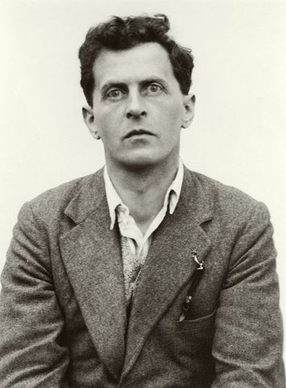

二十世纪最具影响力的哲学家之一。他的思想分为前后两期：前期以《逻辑哲学论》为代表，主张语言是世界的逻辑图像，划定可说与不可说的界限；后期以《哲学研究》为代表，转向语言游戏、家族相似性与生活形式。一个人的哲学，两次改变了二十世纪哲学的面貌。
维特根斯坦的哲学横跨前期与后期两个根本不同的阶段。前期从逻辑出发，为语言划定界限；后期从日常语言出发，揭示语言在生活形式中的运作。以下六个概念构成其全部思想的骨架——前期三个，后期三个，恰好呈现从"图像"到"游戏"的根本转向。
语言是事实的逻辑图像。命题通过与事实共享逻辑形式来"描绘"世界——这是前期维特根斯坦的核心理论。
"凡可说的，都可清楚地说；凡不可说的，必须保持沉默。"哲学的任务不是提出命题，而是划定可说的界限。
"游戏"没有共同本质——各种游戏之间只有交叉重叠的相似性，像家族成员一样。反对"一切概念必有本质"的传统预设。
语言不是统一的系统而是无数"语言游戏"的集合。意义不在于"指称"而在于"使用"——语词的意义就是它在语言游戏中的用法。
语言游戏植根于生活形式。理解一种语言就是理解一种生活形式。"如果狮子能说话，我们也听不懂它。"
知识的基础不是命题而是一种"行动确定性"。某些"世界图像"不是被论证的而是被默认的——它们是判断的河床。
维特根斯坦生前只正式出版过一部哲学著作——《逻辑哲学论》。其余大量手稿、讲义和笔记均为死后出版。以下五部构成理解其思想的主干：从前期到后期，从生前到身后，呈现一位哲学家如何在一生中两次建立截然不同的哲学体系。
仅七十余页，却以严格的编号命题构筑了完整的逻辑哲学体系——语言图像论、可说与不可说、命题的真值条件。
二十世纪最重要的哲学著作之一。语言游戏、家族相似性、生活形式——彻底颠覆前期体系，开辟日常语言哲学的新方向。
在剑桥的口头讲义记录，用通俗的日常语言介绍后期思想的雏形——从前期到后期的过渡文档，最易懂的入门文本。
维特根斯坦最后的哲学思考。回应摩尔的知识论，提出"怀疑必须有基础"——世界图像作为判断的河床。
1929—1932年间的手稿整理，记录维特根斯坦从《逻辑哲学论》体系走向后期思想的中间阶段——哲学语法学的初步探索。
《蓝皮书》是维特根斯坦在剑桥的课堂讲义记录，用通俗语言介绍后期思想的核心思路。比《逻辑哲学论》和《哲学研究》都更易读，是进入维特根斯坦的最佳入口。先抓住"意义即使用"和"不要追问本质"两条主线。
篇幅短但极难。全书以编号命题排列，逻辑严密如数学。建议先读最后一句话"凡不可说的，必须保持沉默"，再回头从命题1.1读起——知道终点有助于理解整个体系的指向。不必追求数理逻辑细节的全部理解，核心是"图像论"和"可说与不可说"的结构。
维特根斯坦后期哲学的代表作。前半部分（第1—188节）最关键——语言游戏、家族相似性、"意义即使用"的论证都在这里展开。建议配合蓝皮书一起读，会看到从过渡期到成熟期的延续与发展。第189节以后可选读。
维特根斯坦临终前最后的哲学笔记，676段格言式思考。回应摩尔的"外部世界证明"，提出"怀疑的根基在于不怀疑"——世界图像作为判断的河床。读此书可以理解维特根斯坦如何将后期语言哲学延伸到知识论领域。
理解前期维特根斯坦需要了解弗雷格的《意义与指称》和罗素的《数学原理》。弗雷格的数理逻辑是《逻辑哲学论》的直接前提，罗素在剑桥发现维特根斯坦的天才并为其作序。理解这一学术谱系，才能把握《逻辑哲学论》在哲学史中的位置。
本站是为系统学习维特根斯坦哲学而做的导读。维特根斯坦的特别之处在于：他一个人先后建立了两个截然不同的哲学体系——前期的《逻辑哲学论》和后期的《哲学研究》，二者在方法、风格和核心命题上都根本不同，却都深刻改变了二十世纪哲学的面貌。
本站以概念为骨架，以著作为血肉。概念页展开每个核心命题的定义、论证、实例与延伸思考；著作页逐部解读核心论点、结构要点和关键段落。前后期的根本区别会在每一页中被反复标注——因为不理解这一区别，就无法理解维特根斯坦。
导读不能替代原典。维特根斯坦的写作风格——格言式、反体系、拒绝解释——使得二手文献永远无法传达原文的力量。但导读可以帮助你在走进原典之前有一张地图，知道各部分在整体中的位置。